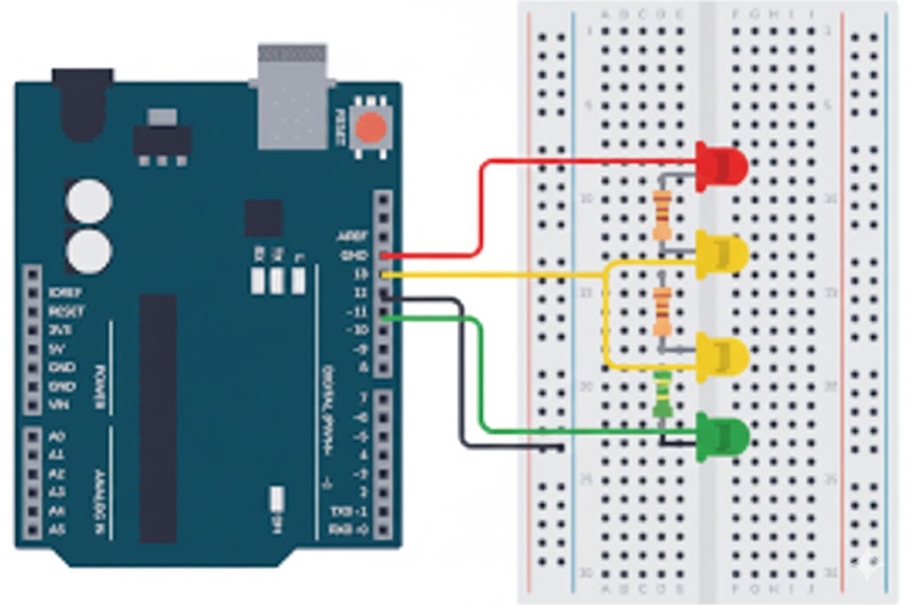

Build a realistic traffic light simulation using 3 LEDs. This project teaches you how to control multiple outputs and create timed sequences - the foundation for any automated system.
1. Concept and Description
In this project, you will learn how to control multiple digital outputs simultaneously. We will simulate a traffic light system using Red, Yellow, and Green LEDs. You'll learn about timing sequences using delay() and how to organize your code with helper functions for better readability.
Controlling multiple digital outputs simultaneously
Creating timed sequences with delay()
Realistic traffic light timing patterns
Organizing code for readability
2. Components Needed
(1) Arduino Uno (or compatible board)
(1) Red LED (5mm standard)
(1) Yellow LED (5mm standard)
(1) Green LED (5mm standard)
(3) 220Ω Resistors (Current limiting)
(1) Breadboard (Half-size or larger)
(6+) Jumper Wires (Male-to-male)
3. Physical Montage (Wiring Instructions)
Connect the LEDs to the Arduino pins as follows:
Red LED: Anode (long leg) to Pin 10 via 220Ω resistor. Cathode (short leg) to GND.
Yellow LED: Anode (long leg) to Pin 9 via 220Ω resistor. Cathode (short leg) to GND.
Green LED: Anode (long leg) to Pin 8 via 220Ω resistor. Cathode (short leg) to GND.

4. The Code (Arduino Sketch)
Copy and paste the code below into your Arduino IDE.
/*
* Project #2: 3-LED Traffic Light Sequence
* The Arduino Student Lab
*
* Simulates a realistic traffic light cycle
* Red -> Green -> Yellow -> Red
*/// ============================================// PIN DEFINITIONS// ============================================constint RED_LED = 10; // Red LED on pin 10constint YELLOW_LED = 9; // Yellow LED on pin 9constint GREEN_LED = 8; // Green LED on pin 8// ============================================// TIMING CONSTANTS (in milliseconds)// ============================================constint RED_TIME = 5000; // Red light duration: 5 secondsconstint GREEN_TIME = 4000; // Green light duration: 4 secondsconstint YELLOW_TIME = 2000; // Yellow light duration: 2 seconds// ============================================// SETUP - Runs once at startup// ============================================void setup() {
// Configure all LED pins as outputspinMode(RED_LED, OUTPUT);
pinMode(YELLOW_LED, OUTPUT);
pinMode(GREEN_LED, OUTPUT);
// Start with all LEDs off
allOff();
}
// ============================================// MAIN LOOP - Runs repeatedly// ============================================void loop() {
// PHASE 1: Red Light
redLight();
delay(RED_TIME);
// PHASE 2: Green Light
greenLight();
delay(GREEN_TIME);
// PHASE 3: Yellow Light (warning)
yellowLight();
delay(YELLOW_TIME);
// Loop repeats - back to red
}
// ============================================// HELPER FUNCTIONS// ============================================// Turn all LEDs offvoid allOff() {
digitalWrite(RED_LED, LOW);
digitalWrite(YELLOW_LED, LOW);
digitalWrite(GREEN_LED, LOW);
}
// Red light ON, others OFFvoid redLight() {
digitalWrite(RED_LED, HIGH);
digitalWrite(YELLOW_LED, LOW);
digitalWrite(GREEN_LED, LOW);
}
// Yellow light ON, others OFFvoid yellowLight() {
digitalWrite(RED_LED, LOW);
digitalWrite(YELLOW_LED, HIGH);
digitalWrite(GREEN_LED, LOW);
}
// Green light ON, others OFFvoid greenLight() {
digitalWrite(RED_LED, LOW);
digitalWrite(YELLOW_LED, LOW);
digitalWrite(GREEN_LED, HIGH);
}
5. How It Works & Challenges
How It Works: We define pin numbers and timing values as constants at the top for easy modification. Helper functions like redLight() make the main loop readable. The cycle goes Red (stop) → Green (go) → Yellow (prepare to stop) → repeat.
Challenges:
Pedestrian Crossing: Add a button that interrupts the cycle for pedestrians.
Two-Way Intersection: Add 3 more LEDs for cross traffic (when one is red, other is green).
Night Mode: After 10pm (simulated), make yellow LED blink continuously.